Partenaires & soutiens
Ils jouent collectif.
Des entreprises qui croient à un projet sportif local. Chaque partenariat repose sur un échange concret : ce que l’association reçoit, ce que le partenaire gagne.
Partenaire du pôle cyclisme
Hobby Cycles
Vélociste à Brest, Hobby Cycles a été le point de départ de nos Social Rides estivaux et reste la boutique de référence de l’équipe cycliste.

Nutrition
Overstim.s
Marque française de nutrition sportive, Overstim.s accompagne SMAL & CO depuis octobre 2026.
Soutien financier
PG Tubes
Distributeur de tuyaux présent dans le Finistère, PG Tubes soutient financièrement l’association.
Implantations
La carte de nos partenaires
Pourquoi nous soutenir
Ce que gagne un partenaire
- Contenus
Sur nos réseaux
Des contenus dédiés auprès d’une communauté sportive locale et engagée.
- Terrain
Sur nos événements
Présence au village, aux Social Rides estivaux et à la rando.
- Valeurs
Affiliation à nos valeurs
S’associer à un projet humain et un état d’esprit orienté vers la performance, le dépassement de soi, l’ambition et la responsabilité. Rejoignez notre réseau de partenaires locaux.
Nous soutenir
Construisons la suite.
Faire un don ou devenir mécène : chaque soutien finance directement le matériel, les déplacements et les événements de l’association.
Don
Un coup de pouce ponctuel pour les projets de l’association.
Mécénat & partenariat
Associer votre entreprise à un projet sportif local et visible.
Rejoignez-les.
Votre entreprise peut rejoindre l’aventure : rejoignez notre réseau de partenaires locaux. Parlons d’un partenariat qui a du sens pour vous.